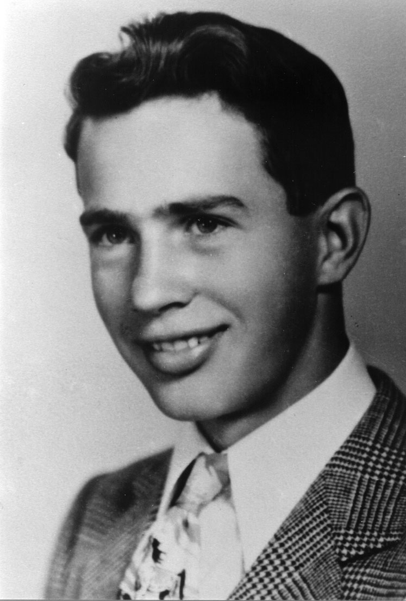
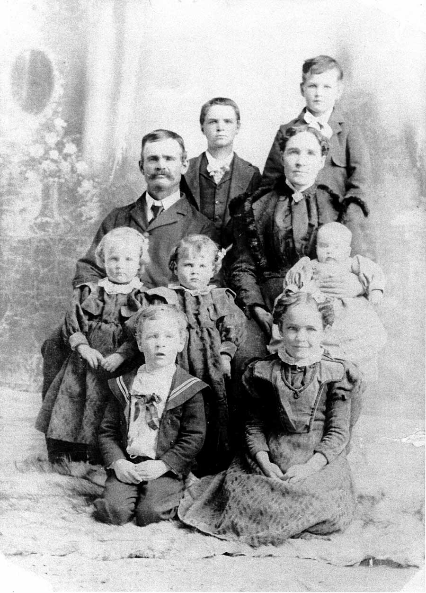
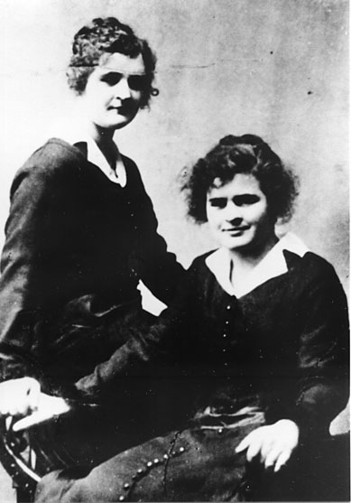

Their parents:
Caroline Sophia Sorenson and Archibald Waller Overton Buchanan
17
1
Their children are: Forrest "D", Maxine, Deane, Belle, Gloria Maye, Jerry "W" and David Earl.
|
Forrest D (picture 28) | Maxine (picture 21) |
Deane (picture 51) | Belle (picture 24) |
Gloria (picture 52-53) David (picture 37) | Jerry (picture 7) |
|
Archie Earl Buchanan and his twin sister Carrie Myrl Brugger Their parents: Caroline Sophia Sorenson and Archibald Waller Overton Buchanan
17 |
55
1 |
"The family loved in a little log cabin with a dirt floor and a dirt roof. Nevertheless it was kept clean and tidy. Here in this humble home filled with love, the twins Archie Earl and Carrie Myrl were born, the last two of Archibald's wonderful family. The 'midwife' who officiated was Harry L. Payne, a son-in-law of Archibald's. His only qualifications were that he was neat and clean and full of faith.
Earl remembered having this picture taken (page 4). He had never seen a rocking horse before. Myrl didn't want her picture taken and the only way she would consent was that she would be given a candy stick. She is holding the candy stick between the horse's ears.
Earl had two older sisters, Delilah and Mary Ann. Three brothers died in infancy, Loren, Aaron and Ammon."
|
L to R Archie Earl Buchanan Mary Ann Buchanan Black Delilah Buchanan Poole Carrie Myrl Buchanan Brugger |
Mother: Caroline Sophia Sorenson Buchanan - Center L. to R. Delilah, Myrl, Earl and Mary Ann |
| 38 | 39 |
In 1894, Archibald decided to leave Mexico and move his family back to Utah. They moved back to Glenwood near Richfield, with his other families.
Earl and Myrl started school in the fall of 1898 in Glenwood, in the old adobe school house. In those days the children had two years of beginners classes, and then first grade.
At Christmas time Earl would usually get a harmonica, and a few nuts and candy. One time at a Christmas program a Christmas tree was decorated with lighted candles, which was the custom in those days. Santa Claus was there, wearing a red suit trimmed with white cotton. The cotton caught fire, and Santa Claus was burned quite badly.
In the summer of 1900, Earl and Myrl were baptized in the old mill stream by the grist mill in Glenwood.
About a year later, 1901-1902 they moved to Venice where others of the family were settling. Earl's father was Branch President before Venice was a ward. His father could speak the Indian language, and he did a lot of work with the Indians.
Archibald was getting old, and Caroline and her children had to struggle hard to make a living.
|
Archie Earl Buchanan As a Young Man |
As he grew up, Earl worked on farms, herded cows, worked on the threshing machine, and was a willing and hard worked at anything he could find to do.
The year Earl and Myrl were ready to graduate from eighth grade, a smallpox epidemic broke out in the Venice School. School was closed in December for the rest of the school year. In order to graduate, which was an important event, every eighth grader had to take the county examinations in Richfield. Earl and Myrl were deeply disappointed and afraid they couldn't qualify. But with special tutoring by the principal, James L. Despain, they passed the tests, and were rated among the top students in the county. About Sept. 1, that year, Earl received a letter from Sevier County Supt. P. D. Jensen. The letter said, "By reason of your qualifications, you are awarded a four year scholarship to the University of Utah. Be there Sept. 19 to register." Earl was very excited, but wondered how he could go to school and leave his mother with the chores and so many things to do. After much discussion, it was decided he must take the opportunity offered to him. The family rallied to his support and he went to Salt Lake City to live with his sister Mary Ann, and her husband Joseph Black.
He had a most wonderful experience that year. His college career came to a sudden end when he received word that his father was sick, mentally and physically, and his mother needed him desperately. So he put his dreams behind him and returned home.
|
Mahonri Breinholt helped him build a house for his mother and father. Later on, this was our happy home for many years.
Archie Earl and Florene Buchanan home in Venice, Utah. |
40 |
Caroline's life of service shines brightly like her little kerosene lamp.
Earl's father's health failed, and he died in 1915.
Now we will go to Florene's life story. Florene Davis and her sister Clorene were born April 28, 1896, in Kanarra, Iron County, Utah. Their father and mother were Henry William and Annie Isadore Roundy Davis.

When the twins were born, their grandfather John Johnson Davies wrote the following in his journal:
|
May the little twin girls that you have in your house live long upon the earth and also have good health
And then he wrote: Henry has been quite a rustler before but now he'll have to rustle a little more Why? Because his wife has brought him twins for I have seen the pretty little things
John Johnson Davies | 4 |
| 26 | Henry William and Annie I Davis family group
Back row: Adelbert and John L Next row: Parents Henry W. and Annie I. Davis Next row: Twins Clorene and Florene, Baby Wilmer on Mother's lap. Front row: Clarence and Jennie These children were all born in Kanarra. Three more children were born in Venice. They were Fae, Stanley and Verda Mae. |
The Davis home in Kanarra was a frame house. It had a porch and it had a beautiful fireplace. Their grandparents John Johnson Davies and Maria lived with them part of the time.
The Davis family always liked to sing. When a crowd of them would get together, they would always enjoy singing many songs.
The twins always dressed alike. Their mother made their clothes. They always had nice night clothes. At Christmas they would hang their stockings by the fireplace.
While living in Kanarra, Henry would take his family to a ranch in the nearby mountains to spend the summer. There they milked cows, churned butter, made cheese, and sold these products to the families in town. Although they worked hard, the family enjoyed the days spent in the mountains.
On June 14, 1901, the family moved to Venice. They travelled in a covered wagon. They stayed at the home of John Ford for a while, and they bought a farm and home east of Venice. Three more children were added to the family: Stanley, Faye Belle, and Verda Mae. Some years later, they bought the Jakeman home back of the Venice Store.
45 Venice home of Henry William and Annie I. Davis
Florene and Clorene were good cooks. They had lots of practice cooking at home and for the thrashers. When one of the younger children was born at home, 12 year olds Florene and Clorene were in the kitchen making biscuits for breakfast.
|
 27 |
|
On March 7, 1918, a beautiful baby boy was born to Earl and Flo. His name was Forrest D.
On July 15, 1919, a pretty bright eyed girl was born to them. Her name was Maxine. Then before they scarcely had time to catch their breath, along came another cute little girl. Her name was Deane. She was born on Sept. 28, 1920. On Dec. 11, 1922 a pretty little blonde girl named Belle came to join the family and on the very same day, Earl's twin sister Myrl had a baby boy, which they named Raphael, to rhyme with Belle. So Belle and Raphael are twin cousins, and that is the closest any of the twins came to having twins. Gloria, a pretty little girl, was born March 16, 1926. Jerry W, a cute little curly haired blonde boy was born March 20, 1931. David Earl was born Sept. 4, 1939 after the family had moved to Tremonton. He was a cute little brown haired boy. |  |
|
34 Forrest in Back L. to R. Maxine and Deane Belle in front | 35 Forrest in Back L. to R. Deane and Maxine Belle in front |
Belle was a few years older than this when she liked to get up really early in the morning and make the fire in the kitchen stove so mother could cook breakfast. This was summertime, and some mornings Belle would walk down the street to Una Oldroyd's house. Una had some dolls and table and chairs and things that she called her playhouse. She had these things outside, and Belle just loved to wash Una's doll clothes and hang them on the clothesline. Now Una didn't take very kindly to this, so Belle decided to stay home and just wash her own doll clothes, early in the morning.
In the center of Venice was a river bridge across the Sevier River. It was fun to stand on this bridge and watch the river, or throw rocks in the river. One day when Gloria was a little girl, she was standing on the river bridge by the rail kicking her foot. Her shoe came off, splashed in the water and was lost.
Jerry was a cute little blonde curly haired boy. One day Grandma Davis gave him a dime, and he knew just what to do. We went out and planted it in the garden. He was going to grow a money tree. Then when the money tree didn't grow, he couldn't remember where he planted it.
When David was about five or six years old, the family lived in Deweyville. The Bamberger train ran right in front of the house. The Bamberger train was a small passenger train that could stop rather quickly. One day David went across the street to the neighbors, and they gave him a great big watermelon. He was dragging the melon home in a gunny sack when he got stuck on the train tracks. The train had to stop for him, and the conductor got out of the train and said something to him. David would never tell us what the conductor said.
|
This was our Venice church house. It has since been torn down and a modern day building built in its stead. Here we attended Sunday School, Primary, and all the community programs. If I remember right, at one time the chapel and recreation hall were all one room. The benches could be moved around or pulled back for different occasions, plays, Primary programs, Dances, etc. | 46 |
| We had lots of fun at July 4 celebrations in our little town. We would have a special patriotic program, and the participants would wear costumes for the occasion. In this picture Maxine on the left and Melba Mulliner on the right are wearing ruffly crepe paper dresses that their mothers had made. Vee Buchanan in the center is Miss Columbia. 4th of July Venice abt. 1924. | 11 |
| This is Forrest by the old school house. He is tallest boy on the back row. He has dark hair. Miss McCallister was the teacher. |
| Grandma Caroline Buchanan with (L to R) Maxine, Belle and Raphael Brugger | 31 |
| 3 Venice Utah about 1931 Dad (Archie Earl) in back L to R Maxine Belle and Deane Gloria front. | 23 L to R Deane, Una Oldroyd, Maxine and Winnie Gardner Belle with the dog. |
| This is the Venice school house where we attended first through sixth grades. We have many fond memories of this school. | 49 |
25
This is an outing at Maple Grove. Sometimes we would go there and camp for a few days, and sometimes Buchanan reunions would be held there.
In this picture, Mother and Forrest are on the back row. Mother is wearing a hat to shade her form the sun.
Middle row: Winnie Gardner, Gloria, Belle, Deane and Maxine.
Front: Dad and Jerry.
Winnie Gardner often went with us on our outings.
This lower picture is the old swimmin' hole in the Sevier River west of our home in Venice. This picture was taken sometime in the 1980's and looks far different than it used to. The river was much wider when we lived in Venice, and it had willows and wild currant brushes along the banks, and a foot bridge that the boys built across the river.
48
I remember Grandma and Grandpa Davis' home in Venice. (Picture #45). I remember the cellar with the large round pans of milk, setting there for the cream to rise, and then be skimmed off and churned into butter. I remember gathering eggs from chicken nests out in the weeds and bushes. We'd have to be careful or we might find a forgotten egg that had gone rotten - - Yuck!
I remember the family Thanksgiving with turkey and the trimmings, and the homemade ice cream.
I remember an old car sitting out north of the house. The car didn't run anymore, so Aunt Faye (a few years older than we were) would play with us kids in it. She gave each of us a funny name. The only name that I remember is Pickledy. I remember Aunt Faye's bedroom with movie stars' pictures all over the walls.
I remember the wash house and the hand operated washing machine that wasn't used anymore. What an antique it would be now. I remember a bittersweet apple tree. I thought the apples were good. Grandma and Grandpa didn't mind having us come, and roam around, and see what there was to see.
This picture is Dad's old granery in Venice. On one side is an old sugar beet wagon used to haul sugar beets to the sugar factory. (The wheels have been removed.) The granery was built by Archie Earl Buchanan many years ago.
On the other side is a lean-to, used as a garage. Years ago the garage was a good looking building, and had double doors on the front.
44
Things were going pretty well now for Earl and Flo. Earl loved life, he worked hard, played hard, and he had a fine sense of humor. He loved basketball, dancing, and dramatics, and took enthusiastic part in all of them.
Flo was a good wife and mother. She kept a clean house, and was a good cook. She sewed clothes for her children and always kept them looking nice. She loved life. She loved to help Dad with plays that he directed. She was always doing something for someone. Those were the days for visiting in the afternoon, spending time with relatives and friends.
| The depression came. Earl and Flo struggled through the depression. Times were rough for everybody. Earl decided to go back to school. The system and rules had changed since his school days. He went to high school in Richfield for a year and accumulated enough credits to enter college. He found sale for his livestock and property. Earl and Flo with their large family of six children moved to Logan in August 1934. |
| They bought a home in Logan on 4th North. Earl registered for school at Utah State Ag. College. He enrolled in a forest service project, with a promise of placement when he completed college. It was tough going, but he stayed with it two years, when the program was discontinued. Logan was a beautiful place, and we enjoyed living there. Many friends and relatives came to visit us. It was good to have them come. Here is a picture of Gloria and two of her classmates in the third grade. They are holding a doll her class had made. Gloria Buchanan is on the left. | 36 |
| Home in West Tremonton | 10 |
| They set about fixing up the house. There was plenty of room for their expanding family. | |
| David Buchanan was born Sept. 4, 1939, in Tremonton, Utah. He was a cute little brown haired boy, and received lots of love and attention from his older brothers and sisters. The bassinette he is in was the one used by all of his six brothers and sisters. Jerry and David were good pals. Here they are with one of our dogs named Pug. We had several dogs over the years, each one named Pug. The other picture is David and his Dad talking things over. | |
| 18 | 16 |
| 29 | |
| The family enjoyed living in Tremonton. Along with farming, Earl did field work for the county agricultural Org. He was active in Farm Bureau, was on the Box Elder County Fair Board, a member of the High Council in three stakes, and served in all ward organizations. Flo served in the Relief Society presidency, primary and MIA. She was a member of the Daughters of the Pioneers. |
| 14 Maxine was queen of the Gold and Green Ball one year |
20 Gloria in her prom dress |
| Maxine with big hat on. Deane in back. | 2 |
| Sleigh riding in Tremonton Ed Kerr, Kathryn Kerr, and David | 32 |
| Deane and David Tremonton | |
| Earl and Flo decided to sell their home and farm in Tremonton. They bought a home and farm in Deweyville. This is the home in Deweyville. After a few years, they moved to Garland. |
33 David in Deweyville |
8 Belle, Jerry, Deane and David |
| From Garland, Earl and Flo moved to Elwood. They bought a farm and a nice home in Elwood. Elwood home in wintertime (next page)
Jerry in the navy | 15 |
| 19 - "I was going to send this to you last time I wrote but forgot. It was taken the week I got back from leave." Jerry Buchanan abt. 1950 | 42 |
| Forrest served in the National Guard at Fort Lewis Wash. While he was there, Deane and Belle took the family on a trip to Washington to visit Forrest. Earl had a new Pontiac car which he drove. Belle kept a diary of the trip and itemized all expenses. The trip cost the unbelievable sum of $119.42. |
| Forrest fulfilled a mission to the New England States in 1947. In those days, missionaries travelled without purse or scrip. One time Deane sent a box of cookies and things to Forrest. He wrote back to say that when he received the box, he and his companion had missed four meals and were very hungry. The box of cookies was a welcome treat. On January 26, 1950, Forrest D Buchanan and Arvilla Jacobson were married in the Salt Lake Temple. |
|
| Forrest loved to sing in choirs, and to sing solos. He was High Priests group leader. He was the family genealogist. Arvilla was Relief Society President and has been in Rel. Soc. Presidencies several times. She has also been organist, and has worked in the handicapped Primary. She has worked in name extraction. They have two sons, Joseph, and Lynn, and ten grandchildren. Forrest died of leukemia Feb. 28, 1980. He was buried in Salt Lake City. |
Deane Buchanan and Darvil O. Wilcox were married June 19, 1947 in the Logan Temple.
Deane has been employed at Clearfield Naval Supply Depot, and Hill Air Force Base. She has worked in the Primary, MIA, as Relief Society President, and 10 years as Junior Sunday School teacher. She has given candy making demonstrations, and cooking mini-classes in Relief Society.
Darvil (Doc) served in the Army Air Force stationed in Greenland, World War II. He has worked all his life in the auxiliaries of the church, and has served as first counselor in a Bishopric.
| Darvil and Deane served an 18 month mission to Georgia, from Feb. 1944 [?] to Aug. 1945 [?]. In Cordele, Georgia, Darvil served as Branch President, and Deane served as Primary President. Darvil and Deane were volunteers for 18 months in the church membership dept. in Salt Lake. They served for two years as temple ordinance workers, in the Ogden Temple. They have 4 sons, Craig, Keith, Mark, and Corey. 14 grandchildren, two of which are twin grand daughters |
On February 7, 1946, Belle Buchanan married Richard L. (Dick) Molloy, in Tremonton, Utah. They lived most of their life in Lewiston, Idaho.
Belle has been employed at Clearfield Naval Supply Depot. She was employed at J. C. Penney Co. in Lewiston, Idaho for many years and returned from there. She has worked in the Primary Presidency and as a Primary teacher. She has worked in the name extraction program.
Dick served in the U. S. Navy many years. He worked on the police force in Lewiston, Idaho.
Belle and Dick have two sons, Michael and James (Jim), and 6 grandchildren.
| Belle died July 17, 1993 in a hospital in Spokane, Washington She was buried in Lewiston, Idaho July 20, 1993. Belle died of cancer. She was a dear sister. |
Del has a love for Clydesdale horses. He is always lending a helping hand to someone in need. He has been High Priests Group Leader, and he a Gloria have taken many groups to the temple. Gloria has taught a Relief Society class. They have been stake missionaries. They are now ordinance workers in the Ogden Temple.
Gloria has 4 children: Melanie, Jeff, Kirk and Lea Ann.
Del has 4 children: Kenneth, Ranae, Eldon and Paul.
Between the two of them, they have 28 grandchildren and 5 great grandchildren.
The last three years, they went to young women's camp with the mutual girls, staying three days each time, joining with them in their activities and helping with the cooking.
Jerry W Buchanan | Barbara Wood Buchanan |
David fulfilled a mission to England, Scotland and Ireland in 1960. |
David Earl Buchanan and Kaye Liljenquist |
Sister Florene Buchanan | Elder Earl Buchanan |
In July 1963, Earl and Flo received a mission call to the Florida Mission. They left Aug. 11, 1963. They worked in five different branches, and a Branch Presidency. The highlight of their mission would always be when they were able to teach someone the Gospel and take them into the waters of baptism. When it was time for them to return home, Gloria took a plane to Florida, and found she had the task, whether she liked it or not, of driving Mother and Dad home. Dad had developed heart problems which came and went, all the way home.
Earl and Flo returned from their mission June 1965. Earl's health was not good after they returned. He spent much time in hospitals with heart attacks.
On February 7, 1967, Earl and Flo's family held a wedding reception in honor of their 50th wedding anniversary. The church was beautifully decorated for the occasion. Many friends and relatives came to pay honor to Mother and Dad. It was an honor for the children as well to have parents who set such good examples for us to follow.
In 1972, an open house was held to honor Earl on his 80th birthday. Maxine's daughter julie had flower leis flown in from Hawaii for the occasion. A large crowd of friends and relatives came to pay tribute to our dear old Dad and Mother. Earl and his cane. This was the cane that Earl's father used. It was made in Mexico from a branch of a coffee tree. Earl was very proud of this cane, and he used it for many years. This picture was taken at a family reunion at Fish Lake Utah |
| Earl at Promontory, standing by the old train where the Golden Spike was Driven. In the years that followed, Mother's health failed and Dad's health wasn't too geed. The sons and daughters helped to take care of them and were happy for anything they could do.
Dad passed away Aug. 5, 1976 We honor and respect our parents for their exemplary lives, for their dedication to family, and to the church, and to church service, and to helping others. |
| This is a family group picture taken after mother's funeral. Although the picture isn't too clear, we decided to use it anyway. |